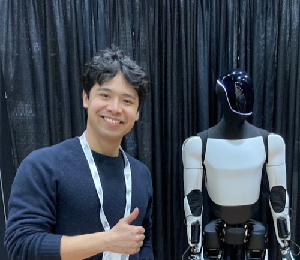

Taiki Papandreou
AI engineer in the Netherlands. I build AI systems that ship into regulated businesses.
Three creatures from the cultures I carry: a guardian, a struggle, and freedom. One journey west, from Japan through China to Greece, along the old Silk Road.
Scroll
Kitsune
The guardian
The shrine fox keeps watch at the gate. Sacred and a little mischievous, both at once. It protects without needing to be seen.
Lóng
The struggle
The dragon does not fight another creature. It rises through the storm. Strength is holding on while the sea pushes back.
Pegasus
Freedom
Born from tragedy, it became beauty. It bows to no throne and does not need one. It keeps rising.
Winged horses travelled east along the Silk Road. In China, the fine horses that came from the west were called heavenly horses.
Taiki Papandreou

- Work
- AI engineer at a five-person consultancy in the Netherlands.
- Shipped
- In four months: an AI assistant inside a client's Azure tenant, an insurer's risk assessment rebuilt around human sign-off, and our entire back office.
- Studied
- MSc in Artificial Intelligence, University of Amsterdam. Three published papers.
- Speaks
- English, Japanese and Dutch.
- Write to
- taiki.papandreou at gmail dot com
- Elsewhere
- LinkedIn, X